摘要
本案為崔XX與中國XX保險公司遼源市分公司之人身保險合同糾紛。爭議在於崔XX於民營醫院就醫，保險公司以違反合同約定之『公立醫院』條款為由拒賠。吉林省高級人民法院裁定駁回保險公司再審申請，保戶勝訴。
爭議焦點與裁判要旨
- 限定『公立醫院』之條款被認定為免責條款，因實質減輕保險公司責任
- 保險公司未舉證證明已盡提示說明義務，應承擔不利後果
- 免賠額條款亦屬減輕責任條款，需經提示說明方生效
- 法院適用《保險法司法解釋(二)》第9條認定免責條款範圍
法學見解
本案裁判理由主要基於兩點：首先，法院依據《保險法司法解釋(二)》第9條，認定保險合同中限定被保險人須於『二級（含）及以上公立醫院』就醫之條款，因限制就醫範圍並導致拒賠後果，實質上減輕或免除保險人責任，故屬免責條款。其次，保險公司未能提供充分證據證明於訂立合同時已對該免責條款履行提示與明確說明義務，依舉證責任分配原則，應承擔不利後果。此外，法院附帶認定免賠額條款同屬減輕責任條款，亦需經提示說明。本案適用之核心法律為《保險法司法解釋(二)》第9條，該條文擴大了免責條款之認定範圍，涵蓋免賠額、免賠率、比例賠付及類似限制責任之約定。對保險實務之啟示在於：保險公司於設計條款時，應注意任何限制被保險人權利或減輕自身責任之約定（如就醫機構限制、免賠額等），均可能被認定為免責條款，須於締約時以顯著方式提示並明確說明，否則該條款可能不產生效力。此判決延續司法實踐趨勢，強化對投保人權益之保護，提醒保險業者應完善契約說明程序並保留相關證據。

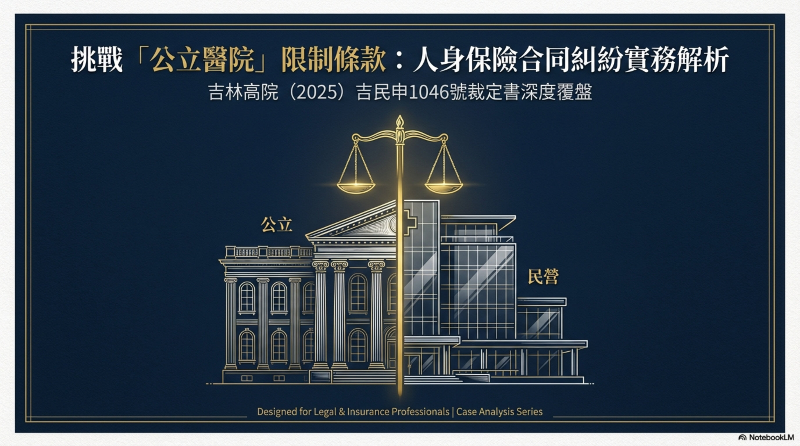
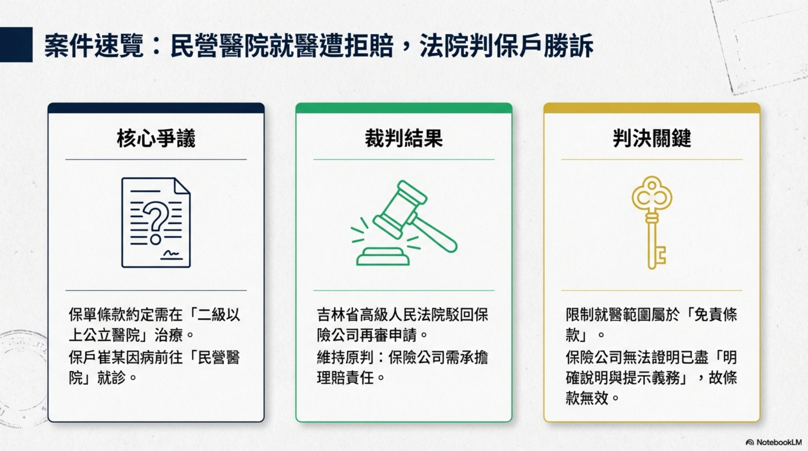
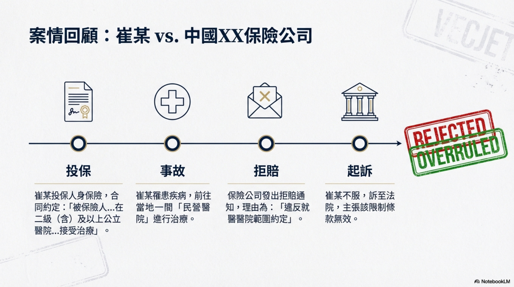
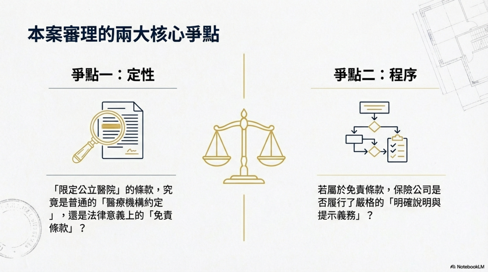
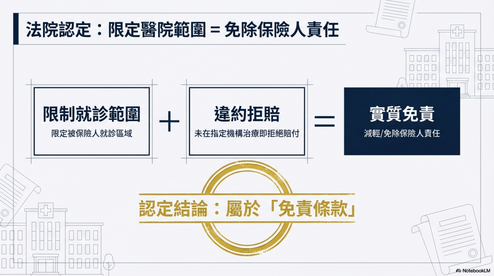
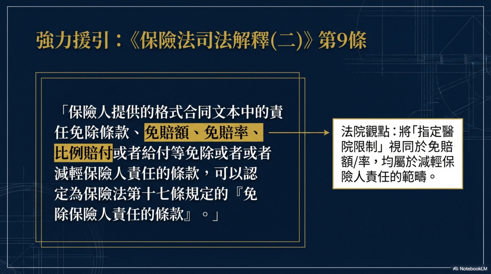
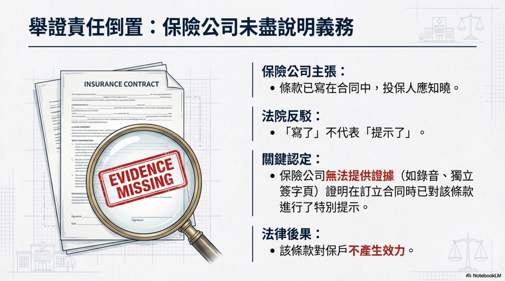
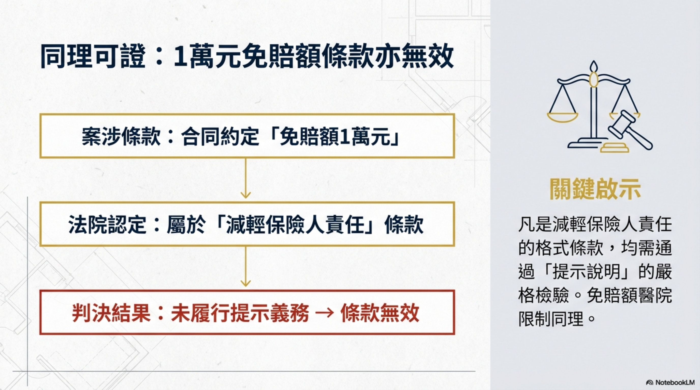
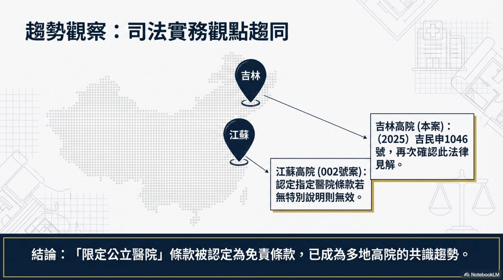
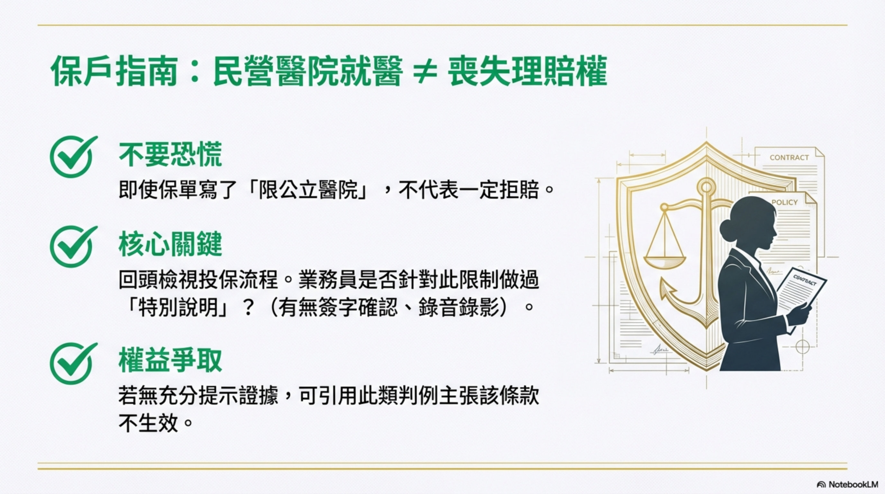
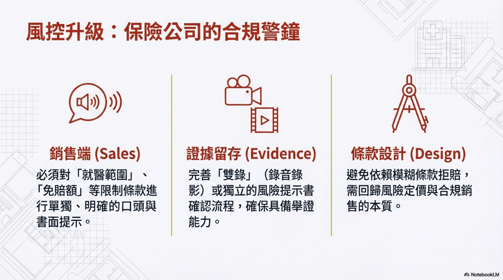
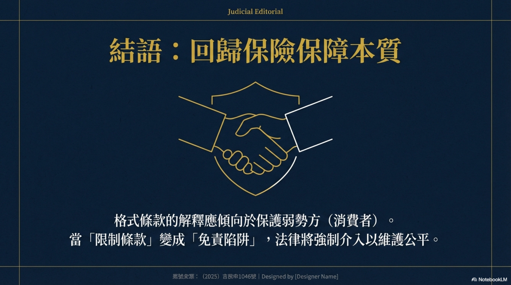
人身保險合同糾紛再審審查民事裁定書
基本資訊
| 項目 | 內容 |
|---|---|
| 案號 | （2025）吉民申1046號 |
| 案由 | 人身保險合同糾紛 |
| 審理法院 | 吉林省高級人民法院 |
| 審理程序 | 民事再審審查 |
| 裁判日期 | 2025-04-28 |
| 當事人 | 崔XX vs 中國XX保險公司遼源市分公司 |
| 結果 | ✅ 保戶勝訴 — 駁回保險公司再審申請 |
案情摘要
崔XX投保人身保險，保險合同約定「被保險人罹患疾病在二級（含）及以上公立醫院或保險人認可的醫療機構的普通部接受治療」方可理賠。崔XX到民營醫院治療，保險公司以違反合同約定為由拒賠。
兩個爭議焦點
焦點一：限定「公立醫院」的條款是否為免責條款？
法院認定：是免責條款 ✅
理由： - 該條款限定了被保險人就診範圍 - 被保險人未在限定醫療機構治療將被拒賠 → 實質上減輕或免除保險公司責任 - 依據《保險法司法解釋(二)》第9條：免赔額、免賠率、比例賠付等均可認定為「免除保險人責任的條款」
焦點二：保險公司是否完成提示說明義務？
法院認定：未完成 ❌
- 保險公司未提供充分證據證明在訂立合同時盡到提示說明義務
- 應承擔不利後果
附帶認定：免賠額1萬元條款
- 免賠額約定也屬於減輕保險公司責任條款
- 同樣需要在締約時進行提示說明
關鍵法律依據
- 《保險法司法解釋(二)》第9條 — 免責條款的認定標準
- 《民事訴訟法》第211條、第215條
實務啟示
| 要點 | 說明 |
|---|---|
| 🔥 限定公立醫院 = 免責條款（又一省高院認同） | 繼江蘇高院（002號案）後，吉林高院也認定此類條款為免責條款 |
| ✅ 免賠額也是免責條款 | 保險公司必須對免賠額條款進行提示說明 |
| ✅ 舉證責任在保險公司 | 保險公司需證明已盡提示說明義務 |
| 💡 在民營醫院就醫≠喪失理賠權 | 如果保險公司未充分提示說明，限定就醫範圍的條款不生效 |
對保戶諮詢的指導意義
- 多省高院已形成趨勢：限定公立醫院的格式條款可被認定為免責條款（江蘇+吉林）
- 保險公司以「在民營醫院就醫」拒賠時：先確認保險公司是否充分提示說明了此條款
- 免賠額問題：如果保險公司未對免賠額做提示說明，該條款也可能不生效